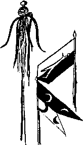

Son derece kötü kalktı. Dışarıda ince ince bir yağmur yağıyor, kış bitmiyor, hiç bitmiyordu. Evin nem ve küf kokusu dayanılır gibi değildi.
Suat hiçbir şeyden emin değildi artık. Sersem sersem yatağının içinde oturdu. Belki hiçbir zaman Ulus’ta bir evi olmamıştı, belki bir romancı değil viranhanelerde sürten bir berduştu. Adının Lâlsuat olma ihtimali de pek yüksekti... Anette, Lâlendam, Melissa. Bu güzel kızlar resm-i geçidi, zaten müstakil şüphe kaynağıydı...
“Naapsın beni karılar... Tuvalete gitmeye halim yok... Ne rüyaymış... Ezdi tüketti beni, ömrümün yıllarını aldı... Yok arkadaş! Ben bundan sonra uyumuyorum...”
Söylene söylene tuvalete gitmek üzere kalktı. Uzunca bir süre tuvaletin yerini kestirmeye, başka mekânların tuvaletlerinden ayırt etmeye çalıştı. Sonra hatırladı. Kapının bir menteşesi böyle kırık mıydı? Böyle alaturka mıydı? Deliği bu örümceğin kapaması ne demekti?
“Yav, ben bu evde değil miydim dün gece?"
Sonra Suat’ın büyük şoku geldi. Allah’ın cezası donunu belinden ayıramıyordu... yarı kapalı gözlerini açarak üstündekilere baktı. Son derece ince, yumuşak, fakat metalik pırıltılı bu giysileri nefretle hatırladı.
Giysilerin ima ettikleri hakkında pek bir şey düşünecek halde değildi. Çünkü de-manyetize etmeye yarayan alet yoktu... Var gücüyle çekiştirdi. Canı yandı. Bu donu veren Allah, çağırma düğmesini de vermiş miydi acaba? Avanak avanak, sefil çevresine bakındı. Çaresizlik içinde pencereye gitti. Akan yağmurun tozlu camda yaptığı yollardan birine gözünü dayadı. Evin biraz üstünde iki adet ahşap, orman evi kılıklı ev vardı.
“İyi, ne hoş, onlar da gerçek... Hepsi âlâ... Ama tumanı çözecek alet yok... Hadi lan oğlum, başka bir kâinattan geldiniz... eriyin... kaybolun... gözlerime bak... eri... eriii..."
Mutfağa gitti. Sefil, tahta saplı bir bıçak eskisinden başka bir şey bulamadı. Bıçağın ucuyla metal kumaşı kesmeye çalıştı. Başarılı olamadı.
“Yav çövdürecem, salacam valla...”
Sırf bu rahatsızlıktan ötürü, gidip Dokuz veya Onuncu şubeye teslim olabilirdi. Sıkıntıdan tomur tomur terlemeye başladı:
“Melissa’nın kont dedesini sorup soruşturacağıma, keşke oturduğu adresi öğreneydim!"
Giysileri o değişik evrenin mamulatı diye, o evrendeki herkesi de burada bulacağını sanıyordu. Çok lazımmış gibi zil çaldı. Suat aceleyle kapıyı açtı. Bu solaryum yanığı suratı nereden tanıyordu? Kadın,
“Suat Bey! Ay hiç umudum yoktu," diye kıkırdadı, "epeydir yoktunuz... Herkes son yazdığınız romanı daha iyi yaşayıp yazabilesiniz diye başka bir evrene gittiğinizi söylüyordu... Malum yazarlar bunu yapıyor!... Demek geldiniz... Hah hah... Çok şeker... Değil mi? Oralar nasıl? Buralar gibi mi? Hah hah hah... Yoksa biz sizi yeni evde ararken hep burada, burnumuzun dibinde miydiniz?"
Suat bu sabah hoşluğunu ve şuhluğunu çekecek durumda değildi. Büyük sıkıntılar içindeydi.
“Bu... buyurun Fahrünnisa Hanım?”
“Ay ilahi!... Dikkat etmemişim... Bu kılık da ne ayol... Öyle İlaçmış Yürek gibi olmuşsunuz... Maskeli balodan mı kaldınız?...”
“Hanımefendi!”
Suat bunu sertçe söylemiş olmalıydı ki kadın özür dileyerek geliş nedenini açıkladı. Ahşap evlerin ne renk boyanacağını konuşmamışlardı. Sonra da Suat ortadan kaybolmuştu. Evler böyle boyasız, verniksiz bir kış geçiremezdi. Ne renk olsundu? Suat gayet baştan savma bir tavır takındı:
“Sizin zevkinize güveniyorum, nasıl olursa makbulüm.” Kadının yarenlik edeceği tutmuştu:
“Sizin için olanı yavruağzına kaçan aşı boyası, hizmetçiler içinse kaz boku, nasıl uygun mu?”
“Hanımefendi, iki dakika daha beklerseniz emin olun ki ben de size bir seleksiyon sunma durumunda olacağım...”
Kadının soran bakışları üzerine Suat patladı:
“Altıma etmek üzereyim, anlıyor musunuz? Çişimi yapmak üzereyim... Tamam mı?”
Fahrünnisa Hanım onlarca özür dileyerek ayrıldı. Suat “bari banyoda yapayım bu haltı” diyerek banyoya koştu... Hayatında bu kadar aşağılanmış hissetmemişti kendini. Duşun altına girdi. Buz gibi suyu açtıktan sonra çişini yapmaya başladı. Soğuk suyun altında dişleri birbirine vuruyordu, çişini bu sıcaklıkta tutan vücuduna ise minnet duydu.
İşini bitirdiği zaman korkunç bir rahatlama hissetti. Biraz sonra, bunun yalnızca def-i hacetten kaynaklanmadığını fark etti. O Allah’ın cezası kumaş su altında erimeye başlamıştı! Suat o sırada bunun yeni bir rüya olduğunu düşünüyordu. Doğal bir olay olduğunu tabii ki bilemezdi. Ancak çok, çok sonra, malzemeci bir mühendis arkadaşına tahlil için küçük bir parça götürdüğünde gerçeği öğrenecekti: Kumaş, içine teflonumsu bir madde katılarak esnekleştirilmiş kayatuzu kristalinden üretilmişti. Arkadaşı,
“Vay canına, bu inanılmaz bir buluş... Bu teknolojiden yüzlerce yıl uzağız. Suat bunun patentini alalım... üretelim...” diyecek, araştırma konusunu değiştirerek kumaşı yeniden üretmeye odaklanacaktı. Bazen mühendislerin de bir şeye taktığı olur.
Suat giyinmek için bir şeyler aradı. Lâlgiller eşyalarını taşırken, küçük odasında kapı arkasına astığı için unutulmuş, kirli, siyah bir gömlek ve yeşil kadife pantolonlarından birini buldu. Hesabının en son hangi bankada olduğunu hatırlamaya çalıştı. Dışarı çıktı. Bakkala uğraması gerekiyordu. Yola yakın bir yerde, çelimsiz vücudu ile büyük bir kâğıt arabasını çekerek caddeye çıkmak üzere olan arkası kendisine dönük bir siluet gördü.
“Lâlmurad! Lâlmurad, bekle!” diyerek ağır gövdesiyle koştu. Delikanlı yüzünü Suat’a çevirdi: Lâlmurad değildi... Gözlerinde geniş kara gözlükler vardı:
“Karıştırdın abi, ben Körmurad’ım," dedi.
“Annenin adı da Körfem mi?”
“Evet... Bizim aile böyle tanınır,” diyerek uzaklaşmaya davrandı. Suat kendi yitik zavallılarının bir izini bulmak ümidiyle çocuğu bırakmadı:
“Lâlgilleri tanıyor musun?”
“Abi onlar ailecek İsveç’e taşındılar..."
Suat’ın ağzı bir karış açık kalmıştı. Ayrıca sırtından hançerlenmiş gibi hissediyordu kendini.
“Niye? Orada daha çok kâğıt mı varmış? Buraların kâğıdı tükenmiş mi?” diye sertçe sordu.
Oğlan “amma cahilsin" edasıyla gülümsedi:
“Adam İsveç’e gittikten sonra niye kâğıt toplasın ki? O işi biz, buradaki sefiller yaparız... Orada kola kutusu işleme tesisi kurdular... Mis gibi işleri var..."
Suat’ın son bir sorusu vardı:
“Ya Lâlendam?"
“Yav, zaten önce o gitti! Bir gece burada erimiş... Kola şişesinde götürmüşler... Sabaha İsveç’te tekrar donmuş, ete kemiğe bürünmüş... Sonra ailesini de yanına aldı..."
“Kim, kim götürmüş?”
“Nebiliim ben yav... Galiba İsveç elçisi mi ne?... Yoksa kâtip miydi, öyle bir şey... Orada evlendiği adam işte...”
Suat’ın içindeki reaya sevgisi ani bir nefrete dönüştü:
“Vay kaltak! Hiç utanmamış mı? Nasıl yatmış o gâvurun altına?”
Körmurad’ın gözlüklerinin arkasındaki gözleri nasıl bir tepki verdi, anlayamadı. Halk ağzıyla konuşmaya gayret ederek üsteledi:
“Sen bir Türk olarak bu işi doğru buluyor musun? Senin bacın gitse he der misin?”
“Doğrusu sizinle al takke ver külâh halvet olmasıdır herhalde, değil mi? Ne diye yanlış bulacakmışım?” dedi çocuk soğukça.
Suat âlemin hepten ne olduğu konusunda müstehcen bir şeyler geveleyerek çocuktan ayrıldı. Bakkala girdi. Bir şoför gelirse istediği parayı vermesini söyledi. Emirgân’da olduğunu hatırladığı bankaya gitti. Kartlarını iptal ettirmek istedi. Memure Suat Ferid’in yüzüne garip garip baktıktan sonra,
“Biliyor musunuz Suat Bey,” dedi, “kartlarınız öyle salak birinin elinde ki, aylarca beşer onar lira çekti durdu... Gittiğiniz evrende siz çekiyorsunuz zannediyorduk... Ay, yani öyle demek istemedim... Özür dilerim... Hemen iptal edeyim...”
Suat nereye gittiği, gitmiş olabileceği konusunda gazetelerde günlerce yazılar çıktığını, İhsan Kırımçak’ın bu işleri pişirip kotardığını tabii ki bilmiyordu. Kız para çekip Suat’a verdi. Yeni kartları sonradan gelecekti. Hesabında doksan üç milyar vardı. Evet, Fahrünnisa Hanım çekleri bozdurmuştu. Suat derin bir nefes aldı. Kendisini birkaç ay idare edecek kadar parası vardı. Sonrası Allah kerim! Bakalım ne kapılar açardı. Sonra bir çilingir buldu. Evlerine takmak için üç yeni kilit aldı. Adamı alarak Ceylani korusuna götürdü. Adam “bu evler senin mi” diye sormadan işini yaptı. Fahrünnisa’nın adamları gelmiş, her iki evi birden boyuyorlardı.
Kafası fena halde bulanmıştı. Eğer İstanbul bıraktığı gibiyse acaba o bin bir zahmetle anahatlarını oluşturduğu Ercümend tarihi de bir çöpten mi ibaretti? Bunu öğrenmenin en kestirme yolunun Eminönü’ndeki Ercümend anıtını ziyaret etmek olduğunu düşündü. Okullar için yazılmış bir tarih kitabı almak da faydalı olabilirdi. Bunları ilk fırsatta yapmaya karar verdi. Önce evlerini dolaştı. Lâlgillerin evinde hiçbir şey yoktu. Kendi ahşap evinde Lâlgillerin taşıdığı ve şimdiden toza batmış eşyaları vardı. Bir köşede, tamir ettiği kitapları duruyordu.
Epey bir heyecan yaparak murassa kitapların durduğu odaya gitti. Kilitliydi. Bıraktığı gibiydi. Çilingire açtırdı. Adam hünerli elleriyle, elindeki eski bir anahtarı eğeleyerek bu kilide uydurdu. Suat adamın yanında odaya girmek istemedi. Adama parasını verip savdıktan sonra odaya girdi: Hiçbir şey yoktu. Buna biraz bozulduysa bile çok yadırgamadı. Bir rüyadan uyanıp da bulduğu definenin düş olduğunu anlayan bir çocuk ne kadar kırılırsa o kadar kırıldı. Çıkmak üzere iken, yerde bir parıltı gördü. Eğildi, aldı. Kocaman, eski kesim bir elmastı.
“Soyuldum, alçaklar” diye bir çığlık attı. Hiçbir zaman da bundan emin olamadı. Zaten bütün sıkıntısı, yaşadıklarının gerçek veya rüya kategorilerine tam olarak oturmamasından kaynaklanıyordu. Kıymetli ciltler yok olmuştu, tamir gören deri ciltler duruyordu. Daha fazla dayanamadı. Evlerini ustalara emanet etti. Bir araba çağırdı. Soluğu Eminönü’nde aldı. Yeni Cami tüm güzelliğiyle oradaydı. Hünkâr Kasrı’nın kurşun kaplamaları delinmişti. Herhalde yağmurda içeri büyük miktarda su giriyordu ama bina ayaktaydı.
Ercümend anıtı ise yoktu. Yine de uzaktan edindiği bilgiyle yetinmedi. Anıtın olduğunu düşündüğü yere kadar gitti. Kaidesi dahil, tamamen kaybolmuştu. Ama çok bariz bir şekilde burada bir anıt olduğunu gösteren işaretler vardı... Kaidenin olduğu yerde toprak nemliydi ve sıkışmamıştı. Bazı yerlerinde karartılar vardı. Gölcükler yoktu, ayrıca daha temizdi. Suat bunu da akılcı bir şekilde nasıl açıklayacağını düşünürken, bir zamanlar, sahi hangi zamanlar, bir kedi ölüsü gördüğü yerde, uzanmış yatan bir berduş gördü... Adam belki de Suat’ın ilgisinden dolayı kalktı, geldi. Dilini ağzının içinde zor dolaştırarak peltek peltek konuşuyordu:
“Buradaki heykel dün gece ujçtu, füze gibi ateşlediler o da ujçtu... Belediyeye gittim... Heykel çalındı dedim... Kimse inanmadı...”
Suat adama “Ben sana inanıyorum arkadaşım," dedi, “ben de dün o heykelin uçtuğu dünyadan kaçtım... Geri buraya geldim...”
“Haa, o zaman başjka... hoşj geldin... vaziyet 1-1” diyerek Suat’a sarıldı berduş. Suat adamın leş gibi giysilerinden kaçmadı, o da ona sarıldı. Anında “yoğun Türk” durumları oldu yine. Etraflarını büyük bir kalabalık aldı. Herkesin maşallah bir fikri vardı. Kimi kavga ettiklerini, kimi asker arkadaşı, kimi esrarkeş, kimi birbirlerini tam kırk yıl kaybettikten sonra bulan bir baba-oğul olduklarını söylüyordu. Birisi heyecanla,
“Depremde kaybettiği oğlunu bulmuş!” diye bağırdı.
Adamdan daha genç olmasına rağmen, herhalde üstü başı daha düzgün diye, Suat’a baba rolü layık görülmüştü. Bu görüş epeyce taraftar toplamaya başlamış ve seyirciler arasındaki yufka yüreklilerin burunlarını çeke çeke ağlamalarına yol açmışken, genç bir kızımız tartışmaya son noktayı koydu:
“Klip filmi çekiyorlar. Tanımadınız mı? Ünlü romancı Suat Ferid son eserine klip çekiyor..."
Ortalıkta kamera vesaire gibi şeylerin olmaması gibi ayrıntılara takılmadılar. Zaten biraz sonra, hazır kamera birlikleri de olay yerine damladı. Bu akşamın mevzuu da çıkmıştı. Yarma Allah kerim...
Suat kameralara dönerek,
“Yoo bilemediniz, her şey bir kamera şakasıydı...” dedi. Kalabalık,
“Ay ilahi, yüreğimize indirdiniz..." diyen ve şakanın ne olduğunu bilmedikleri halde kahkahalarla gülen bir grup ile,
“Yere batsın şakanız, bir gün birisi çekip indirecek, o zaman göreceksiniz" diyerek kızan, fakat söz konusu şakanın ne olduğunu yine bilmeyen başka bir grup olmak üzere iki bölük oldu. Aralarında hararetli bir tartışına çıktı.
Suat iki grubun uzlaşıp barışmasını beklemedi, aralarından sıyrılarak Boğaz’a gitmek üzere olan vapura yöneldi...
[Yavrum, çocuğum bir romanın böyle üç nokta ile bittiği nerede görülmüş? Lütfen şu yazdıklarımı ekleyin, maket gelince görmek istiyorum: Suat Ferid tam vapura binmek üzereydi ki bir de ne görsün? Melissa Tombak-Ferguson! Genç kadın da Suat’ı görmüş, bir ceylan gibi koşarak ona doğru geliyordu.
Suat,
“Melissa, sen ha, bizim evrende ha!" diye bağırdı. Kız utangaç bir tavırla,
“Suat... Suat, sevgilim! Eğer istersen bu evren benim de evrenim olur," dedi.
“Ne demek gülüm, ne demek... Mümkün olsa güçlü ellerimle bu yaşadığımız evreni fırından yeni çıkmış bir somun gibi ortasından ikiye kırar, bir parçasını sana verirdim...”
Kız sevecenlikle gülümsedi. İki sevgili el ele tutuşarak boğuk boğuk düdük çalan vapura bindiler. l.K.]